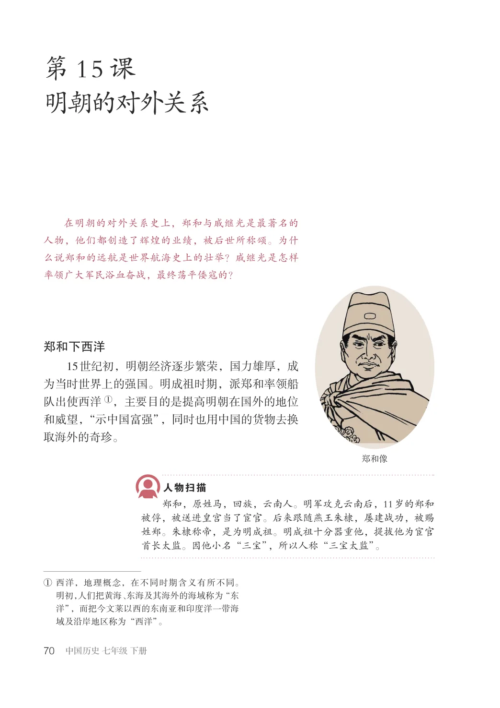
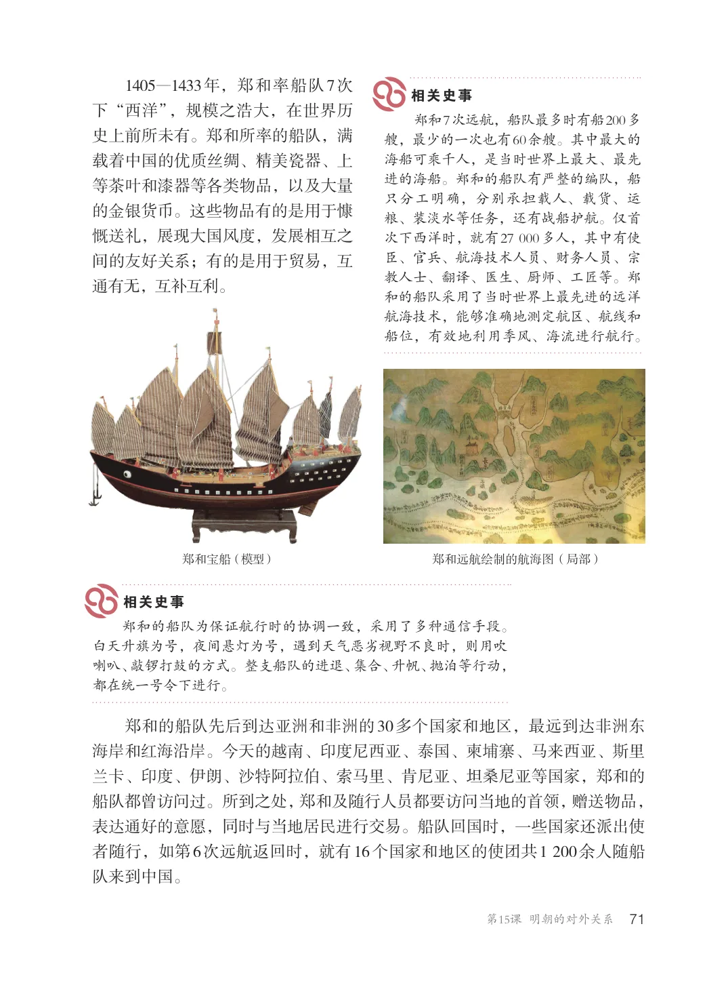
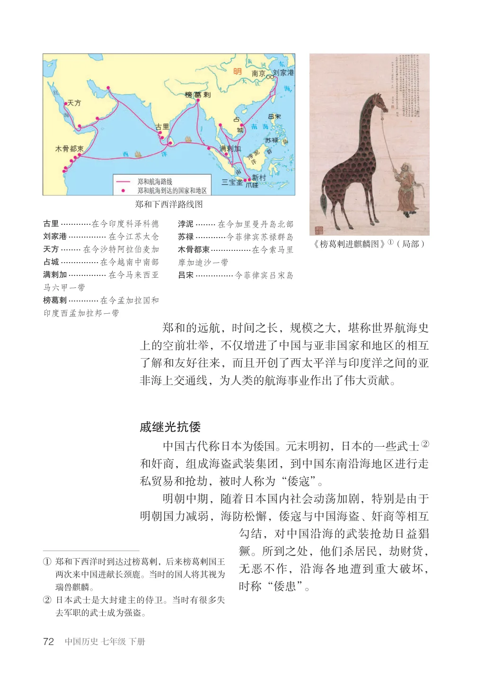
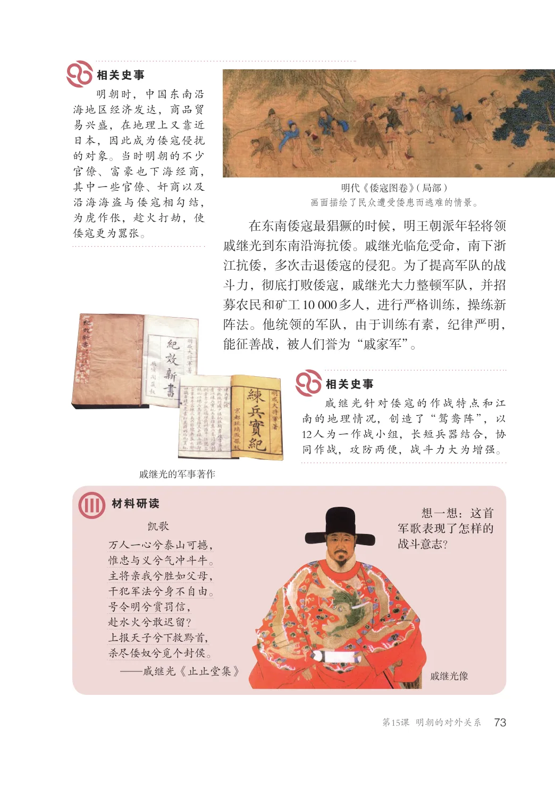
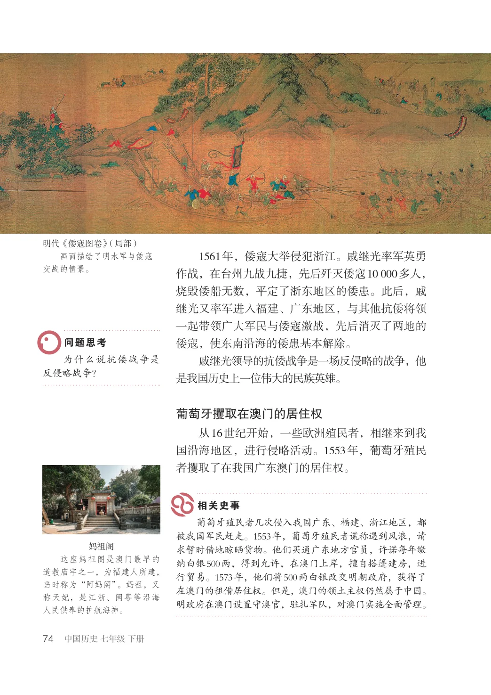
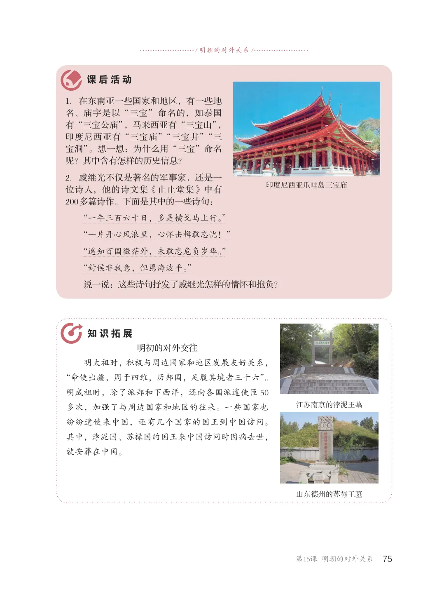

第3单元 · 教材第 70–75 页
第15课 明朝的对外关系
文字版依据教材 PDF 文本层整理；复杂地图、图表及版面关系请以右侧教材原页为准。
在明朝的对外关系史上，郑和与戚继光是最著名的人物，他们都创造了辉煌的业绩，被后世所称颂。为什么说郑和的远航是世界航海史上的壮举？戚继光是怎样率领广大军民浴血奋战，最终荡平倭寇的？
郑和下西洋
15世纪初，明朝经济逐步繁荣，国力雄厚，成为当时世界上的强国。明成祖时期，派郑和率领船队出使西洋①，主要目的是提高明朝在国外的地位和威望，“示中国富强”，同时也用中国的货物去换取海外的奇珍。
郑和，原姓马，回族，云南人。明军攻克云南后，11岁的郑和被俘，被送进皇宫当了宦官。后来跟随燕王朱棣，屡建战功，被赐姓郑。朱棣称帝，是为明成祖。明成祖十分器重他，提拔他为宦官首长太监。因他小名“三宝”，所以人称“三宝太监”。
①西洋，地理概念，在不同时期含义有所不同。明初，人们把黄海、东海及其海外的海域称为“东洋”，而把今文莱以西的东南亚和印度洋一带海域及沿岸地区称为“西洋”。

1405—1433年，郑和率船队7次下“西洋”，规模之浩大，在世界历史上前所未有。郑和所率的船队，满载着中国的优质丝绸、精美瓷器、上等茶叶和漆器等各类物品，以及大量的金银货币。这些物品有的是用于慷慨送礼，展现大国风度，发展相互之间的友好关系；有的是用于贸易，互通有无，互补互利。
郑和7次远航，船队最多时有船200多艘，最少的一次也有60余艘。其中最大的海船可乘千人，是当时世界上最大、最先进的海船。郑和的船队有严整的编队，船只分工明确，分别承担载人、载货、运粮、装淡水等任务，还有战船护航。仅首次下西洋时，就有27000多人，其中有使臣、官兵、航海技术人员、财务人员、宗教人士、翻译、医生、厨师、工匠等。郑和的船队采用了当时世界上最先进的远洋航海技术，能够准确地测定航区、航线和船位，有效地利用季风、海流进行航行。
郑和宝船（模型）
郑和远航绘制的航海图（局部）
郑和的船队为保证航行时的协调一致，采用了多种通信手段。白天升旗为号，夜间悬灯为号，遇到天气恶劣视野不良时，则用吹喇叭、敲锣打鼓的方式。整支船队的进退、集合、升帆、抛泊等行动，都在统一号令下进行。
郑和的船队先后到达亚洲和非洲的30多个国家和地区，最远到达非洲东海岸和红海沿岸。今天的越南、印度尼西亚、泰国、柬埔寨、马来西亚、斯里兰卡、印度、伊朗、沙特阿拉伯、索马里、肯尼亚、坦桑尼亚等国家，郑和的船队都曾访问过。所到之处，郑和及随行人员都要访问当地的首领，赠送物品，表达通好的意愿，同时与当地居民进行交易。船队回国时，一些国家还派出使者随行，如第6次远航返回时，就有16个国家和地区的使团共1200余人随船队来到中国。

郑和下西洋路线图
古里............在今印度科泽科德
浡泥........ 在今加里曼丹岛北部
刘家港............... 在今江苏太仓
苏禄............今菲律宾苏禄群岛
《榜葛剌进麒麟图》①（局部）
天方........ 在今沙特阿拉伯麦加
木骨都束................在今索马里摩加迪沙一带
占城...............在今越南中南部
满剌加............... 在今马来西亚马六甲一带
吕宋...............今菲律宾吕宋岛
榜葛剌............在今孟加拉国和印度西孟加拉邦一带
郑和的远航，时间之长，规模之大，堪称世界航海史上的空前壮举，不仅增进了中国与亚非国家和地区的相互了解和友好往来，而且开创了西太平洋与印度洋之间的亚非海上交通线，为人类的航海事业作出了伟大贡献。
戚继光抗倭
中国古代称日本为倭国。元末明初，日本的一些武士②和奸商，组成海盗武装集团，到中国东南沿海地区进行走私贸易和抢劫，被时人称为“倭寇”。明朝中期，随着日本国内社会动荡加剧，特别是由于明朝国力减弱，海防松懈，倭寇与中国海盗、奸商等相互勾结，对中国沿海的武装抢劫日益猖獗。所到之处，他们杀居民，劫财货，①郑和下西洋时到达过榜葛剌，后来榜葛剌国王
无恶不作，沿海各地遭到重大破坏，时称“倭患”。
两次来中国进献长颈鹿。当时的国人将其视为瑞兽麒麟。②日本武士是大封建主的侍卫。当时有很多失
去军职的武士成为强盗。

明朝时，中国东南沿海地区经济发达，商品贸易兴盛，在地理上又靠近日本，因此成为倭寇侵扰的对象。当时明朝的不少官僚、富豪也下海经商，其中一些官僚、奸商以及沿海海盗与倭寇相勾结，为虎作伥，趁火打劫，使倭寇更为嚣张。
明代《倭寇图卷》（局部）画面描绘了民众遭受倭患而逃难的情景。
在东南倭寇最猖獗的时候，明王朝派年轻将领戚继光到东南沿海抗倭。戚继光临危受命，南下浙江抗倭，多次击退倭寇的侵犯。为了提高军队的战斗力，彻底打败倭寇，戚继光大力整顿军队，并招募农民和矿工10000多人，进行严格训练，操练新阵法。他统领的军队，由于训练有素，纪律严明，能征善战，被人们誉为“戚家军”。
戚继光针对倭寇的作战特点和江南的地理情况，创造了“鸳鸯阵”，以12人为一作战小组，长短兵器结合，协同作战，攻防两便，战斗力大为增强。
戚继光的军事著作
想一想：这首军歌表现了怎样的战斗意志？
凯歌万人一心兮泰山可撼，惟忠与义兮气冲斗牛。主将亲我兮胜如父母，干犯军法兮身不自由。号令明兮赏罚信，赴水火兮敢迟留？上报天子兮下救黔首，杀尽倭奴兮觅个封侯。—戚继光《止止堂集》
戚继光像

明代《倭寇图卷》（局部）画面描绘了明水军与倭寇交战的情景。
1561年，倭寇大举侵犯浙江。戚继光率军英勇作战，在台州九战九捷，先后歼灭倭寇10000多人，烧毁倭船无数，平定了浙东地区的倭患。此后，戚继光又率军进入福建、广东地区，与其他抗倭将领一起带领广大军民与倭寇激战，先后消灭了两地的倭寇，使东南沿海的倭患基本解除。戚继光领导的抗倭战争是一场反侵略的战争，他是我国历史上一位伟大的民族英雄。
为什么说抗倭战争是反侵略战争？
葡萄牙攫取在澳门的居住权
从16世纪开始，一些欧洲殖民者，相继来到我国沿海地区，进行侵略活动。1553年，葡萄牙殖民者攫取了在我国广东澳门的居住权。
葡萄牙殖民者几次侵入我国广东、福建、浙江地区，都被我国军民赶走。1553年，葡萄牙殖民者谎称遇到风浪，请求暂时借地晾晒货物。他们买通广东地方官员，许诺每年缴纳白银500两，得到允许，在澳门上岸，擅自搭篷建房，进行贸易。1573年，他们将500两白银改交明朝政府，获得了在澳门的租借居住权。但是，澳门的领土主权仍然属于中国。明政府在澳门设置守澳官，驻扎军队，对澳门实施全面管理。
妈祖阁这座妈祖阁是澳门最早的道教庙宇之一，为福建人所建，当时称为“阿妈阁”。妈祖，又称天妃，是江浙、闽粤等沿海人民供奉的护航海神。

/ 明朝的对外关系/
1．在东南亚一些国家和地区，有一些地名、庙宇是以“三宝”命名的，如泰国有“三宝公庙”，马来西亚有“三宝山”，印度尼西亚有“三宝庙”“三宝井”“三宝洞”。想一想：为什么用“三宝”命名呢？其中含有怎样的历史信息？2．戚继光不仅是著名的军事家，还是一位诗人，他的诗文集《止止堂集》中有200多篇诗作。下面是其中的一些诗句：
印度尼西亚爪哇岛三宝庙
“一年三百六十日，多是横戈马上行。”“一片丹心风浪里，心怀击楫敢忘忧！”“遥知百国微茫外，未敢忘危负岁华。”“封侯非我意，但愿海波平。”说一说：这些诗句抒发了戚继光怎样的情怀和抱负？
明初的对外交往明太祖时，积极与周边国家和地区发展友好关系，“命使出疆，周于四维，历邦国，足履其境者三十六”。明成祖时，除了派郑和下西洋，还向各国派遣使臣50多次，加强了与周边国家和地区的往来。一些国家也纷纷遣使来中国，还有几个国家的国王到中国访问。其中，浡泥国、苏禄国的国王来中国访问时因病去世，就安葬在中国。
江苏南京的浡泥王墓
山东德州的苏禄王墓
